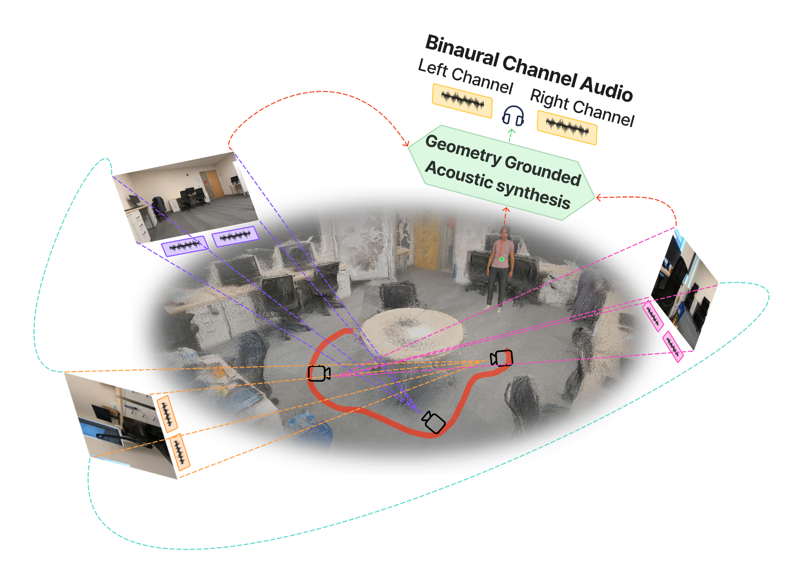
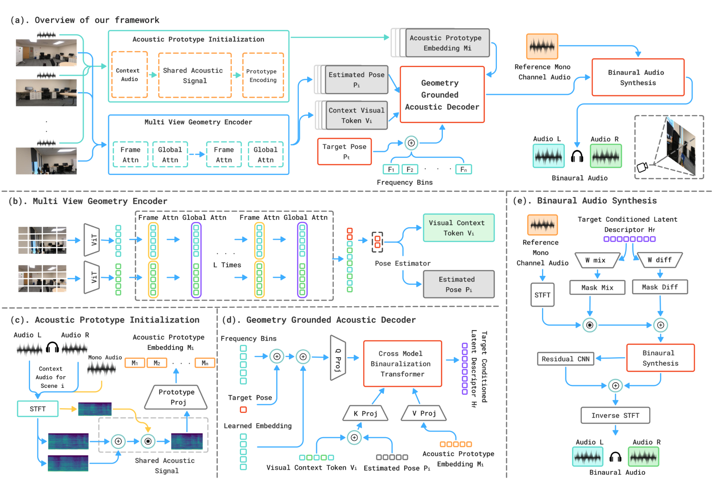
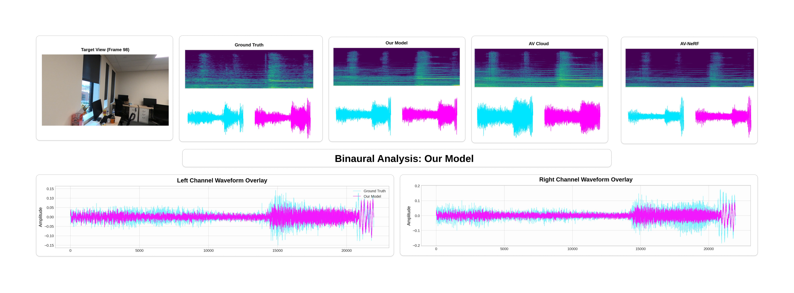

Abstract
We present a unified framework for novel-view acoustic synthesis that directly grounds spatial audio generation in feed-forward visual geometry. The method synthesizes accurate and immersive binaural audio in 3D spaces without requiring viewpoint images, dense point maps, or ground-truth poses for input video.
The framework combines learned visual representations and geometry from feed-forward scene encoding with geometry-aware binauralization. Its Geometry-Grounded Acoustic Decoder dynamically attends to cross-modal features that embed local and global geometry across audio and visual modalities. Experiments show improved quality and viewpoint accuracy across NVAS benchmarks while avoiding time-consuming explicit rendering of novel-view images or dense point maps.
Method
The pipeline constructs a multimodal context from sparse reference video frames and aligned audio. A multi-view geometry encoder extracts visual context and pose-aware geometry. Acoustic prototype initialization encodes reference mono and binaural audio into scene-specific transfer features.
The Geometry-Grounded Acoustic Decoder queries this context with frequency-aware target-pose tokens, attends over visual, geometric, and acoustic features, and predicts target-view binaural transfer fields. Spectral binaural synthesis then applies the predicted transfer fields to mono audio to reconstruct left-right binaural output.

Results
| Dataset | Params | FPS | MAG ↓ | ENV ↓ | LRE ↓ | DPAM ↓ |
|---|---|---|---|---|---|---|
| RWAVS | 3.24M | 189 | 0.3485 | 0.1424 | 0.9589 | 0.2705 |
| Replay-NVAS | 3.24M | 398 | 0.1590 | 0.0400 | 0.8060 | 0.2240 |
Lower is better for MAG, ENV, LRE, and DPAM. Replace or extend this table with camera-ready numbers as needed.
Key outcome
The method improves over AV-Cloud on RWAVS while reducing reliance on reconstruction-heavy preprocessing. Under stricter 50/50 train/test splits, the gains are especially visible in LRE and DPAM, indicating stronger viewpoint generalization.
Visualizations
Qualitative visualization of target-view binaural synthesis. The comparison shows the target view, ground truth, our model, AV-Cloud, and AV-NeRF, along with left and right channel waveform overlays. Our model more closely matches the ground-truth spectrogram and stereo waveform structure, demonstrating improved viewpoint-aware spatial audio generation.

BibTeX
@inproceedings{polra2026nvas,
title = {Visual Geometry Grounded Novel-View Acoustic Synthesis},
author = {Polra, Jay and Chauhan, Dhwanil and Huang, Wenjun and Toth, Kyle and Wang, Xianhui and Ni, Yang},
booktitle = {Proceedings of the IEEE/CVF Conference on Computer Vision and Pattern Recognition Workshops},
year = {2026}
}